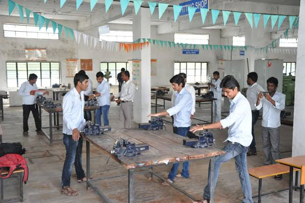
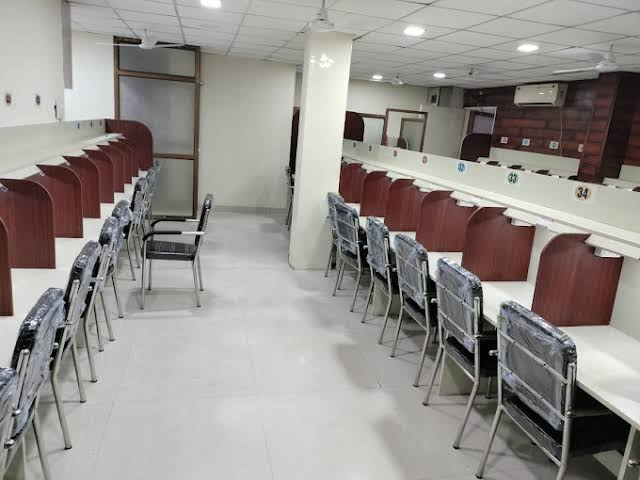

Government ITI Raebareli is dedicated to empowering youth through high-quality vocational training...
Our Facilities
Advanced Workshop Facility

Our ITI is equipped with state-of-the-art workshop facilities that provide students with practical, hands-on experience in real-world working conditions. These workshops include setups for electrical, mechanical, and computer trades, allowing students to use modern tools and industry-standard machines. Safety measures are strictly implemented to ensure a secure learning environment. By working in these advanced workshops, students gain valuable exposure that prepares them for employment in various industries, reducing the gap between academic learning and industrial requirements.
Digital Classroom
Our digital classrooms are designed to enhance the learning experience through smart teaching aids. With projectors, interactive boards, and access to e-learning content, students can understand complex concepts more effectively. Trainers use presentations, simulations, and real-life videos to explain topics. This technology-enabled learning not only improves engagement but also prepares students for modern corporate and industrial settings where digital literacy is a must.
Library & Learning Resources

The ITI library provides a peaceful environment with a vast collection of books, journals, manuals, and magazines. Students have access to both technical and general knowledge resources that support their course curriculum. The library is regularly updated and has a dedicated space for self-study and group discussions. Digital learning resources are also available to encourage research and project work. With librarian assistance and extended study hours, students are encouraged to make full use of this academic treasure.
Computer Lab
The modern computer lab is equipped with high-speed internet and the latest software required for various trades like COPA and other tech-related subjects. Students receive hands-on training in basic computer operations, programming, internet use, and office applications. The lab is accessible during working hours under supervision and helps students become digitally proficient — a necessary skill in today’s job market. The systems are regularly updated and maintained for best performance.
Hostel & Sanitation
Hostel facilities are available for outstation students with separate arrangements for boys and girls. The hostel is secure, clean, and well-maintained, with 24x7 water and electricity supply. Hygienic bathrooms and toilets, proper waste management, and regular cleaning ensure a healthy environment. Hostel wardens monitor discipline and student well-being. There is also a mess facility providing nutritious meals. Special attention is given to safety and comfort so that students feel at home while they focus on their training.
Industry Collaboration & Guest Lectures
Our ITI regularly collaborates with nearby industries and technical organizations to bring guest lectures, industry visits, and live demonstrations to our students. These interactions help bridge the gap between academic learning and industrial practice. Experts from the field share their experiences and provide real-world insights that enhance the learning experience. Such collaborations also increase placement opportunities and boost student confidence for entering the workforce.
Our Trades
Government ITI Raebareli offers a variety of professional trades designed to equip students with practical and industry-ready skills. Each trade is crafted to meet the growing demands of technical sectors in India and abroad. Below is a list of trades available at our institution along with a brief overview:
Placement Opportunities
Placement Cell Overview
The Placement Cell at Government ITI Raebareli plays a crucial role in shaping the future of our students. It acts as a bridge between students and industries, ensuring that they have access to various job opportunities in the field of their training. Our cell is highly proactive, working tirelessly to collaborate with renowned companies for recruitment drives, internships, and career counseling. The placement cell is equipped with experienced professionals who assist students throughout the recruitment process, right from preparing them for interviews to providing post-placement support. They ensure that students are job-ready by focusing on skill development, soft skills, and personality grooming.
Pre-Placement Training
Before the recruitment drives, our students undergo a series of pre-placement training sessions. These sessions are meticulously designed to boost their chances of securing a job. The pre-placement training focuses on various aspects such as:
Resume Writing Helping students create a professional resume that showcases their skills and experience.
Mock Interviews Conducting mock interview sessions to familiarize students with the interview process and improve their performance.
Soft Skills Development Focusing on communication, leadership, teamwork, and interpersonal skills.
Industry Insights Sharing knowledge about industry trends, workplace culture, and expectations to help students transition seamlessly into the professional world.
Industry Partnerships
Our strong ties with industries across various sectors allow us to offer students a wide range of placement opportunities. Government ITI Raebareli has established partnerships with leading companies in fields such as manufacturing, electronics, automotive, and IT. These collaborations enable us to organize industry visits, guest lectures, and internships. Industry professionals and recruiters often visit our campus to select potential candidates for various job roles. These partnerships not only ensure that our students are placed in reputable organizations but also provide them with the necessary exposure to real-world industry environments.
Recruitment Drives
Government ITI Raebareli organizes regular recruitment drives where several companies visit the campus to recruit eligible candidates. These drives consist of written tests, group discussions, and personal interviews. We ensure that our students are well-prepared for these drives through continuous training and mock sessions. Companies visiting our campus are looking for skilled professionals who can adapt to industry requirements, and our students are fully equipped with the skills they need to excel in their respective fields. Our recruitment drives result in numerous job placements every year.
Post-Placement Support
The journey doesn’t end with the placement at Government ITI Raebareli. We provide ongoing post-placement support to ensure that our students continue to thrive in their new roles. Our support includes mentorship from industry professionals, where students can seek guidance and advice as they adapt to their workplace. Additionally, we organize continuous learning sessions that help alumni stay updated with the latest industry trends and technologies. Our post-placement support ensures that students not only secure jobs but also continue to grow and succeed in their careers.
Contact Us
Have questions about admissions, trades, or facilities? Feel free to contact us through WhatsApp, Instagram, email, or phone. We’re here to assist you with any information you need regarding Government ITI College.
WhatsApp: +91 6306743697 Mobile Number: +91 6306743697 Email: princejayshwal371497@gmail.com